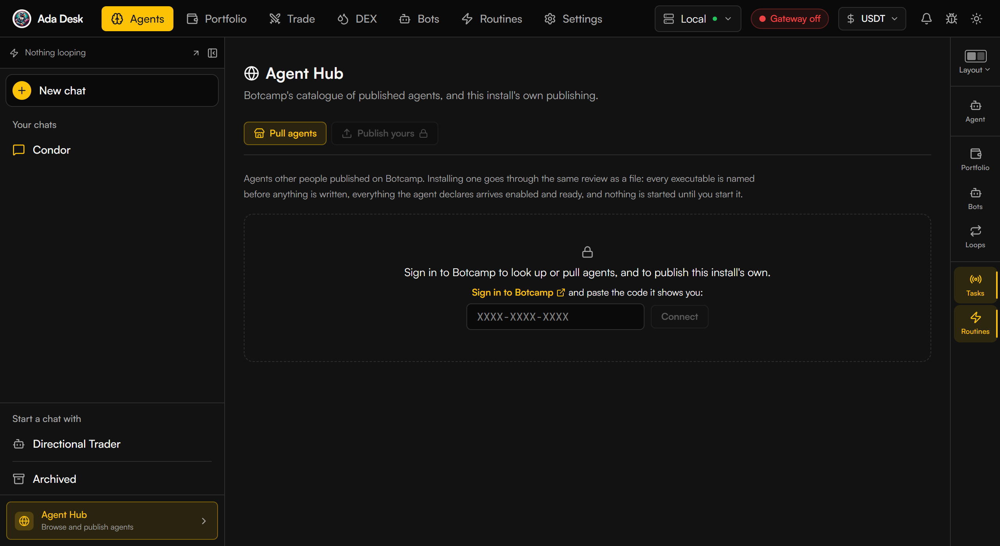
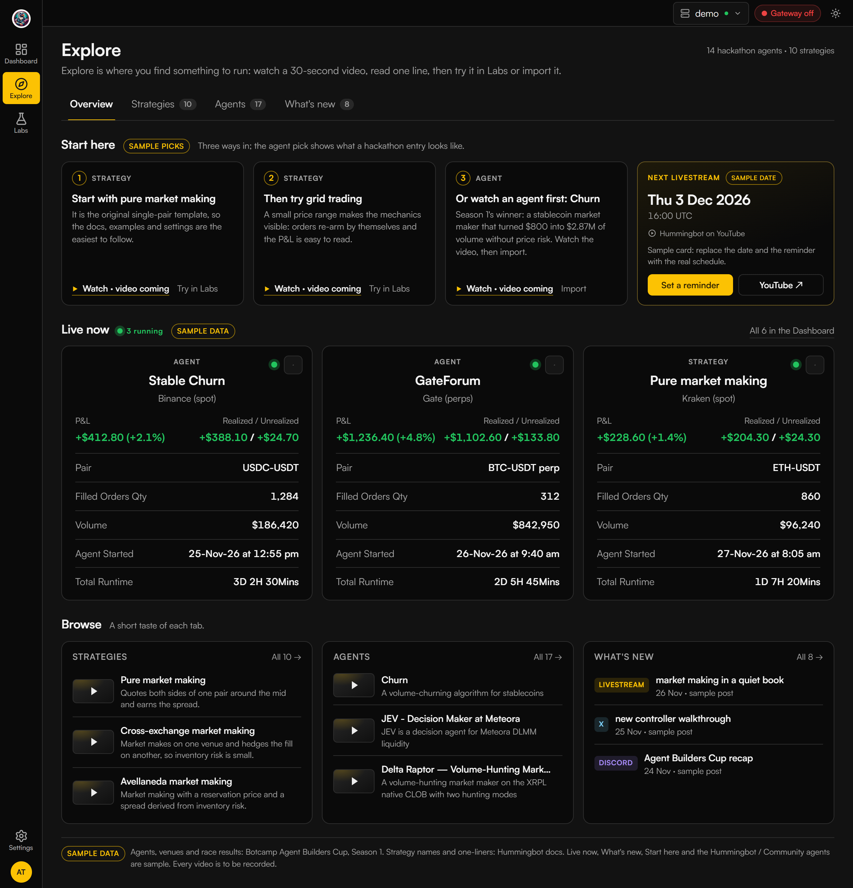
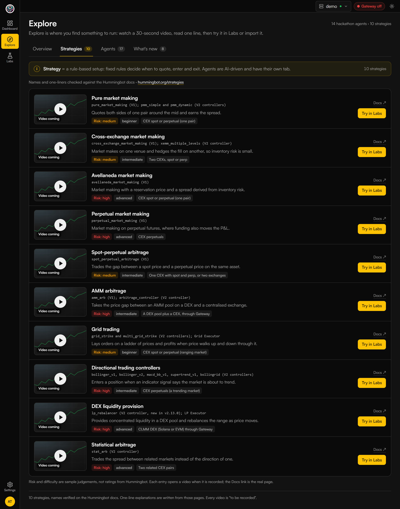
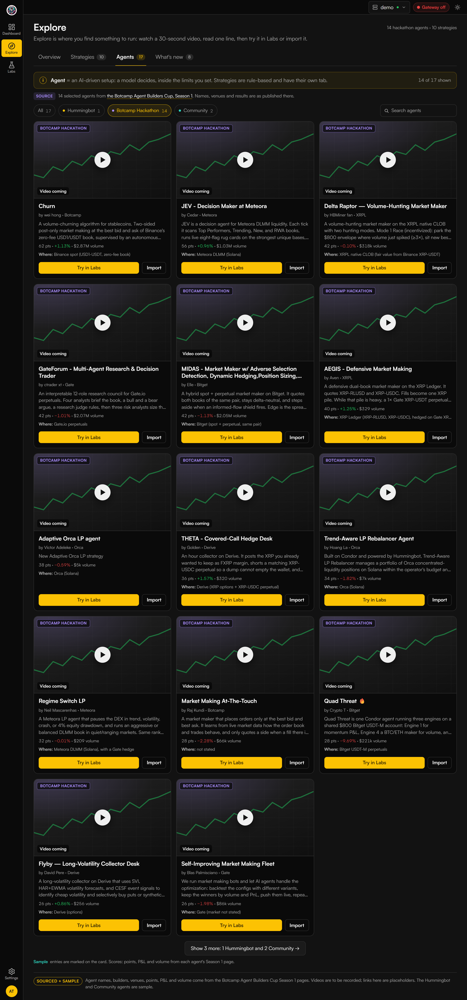
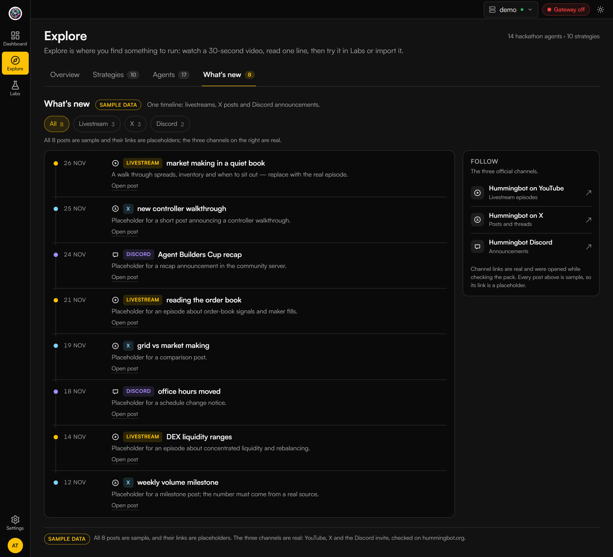
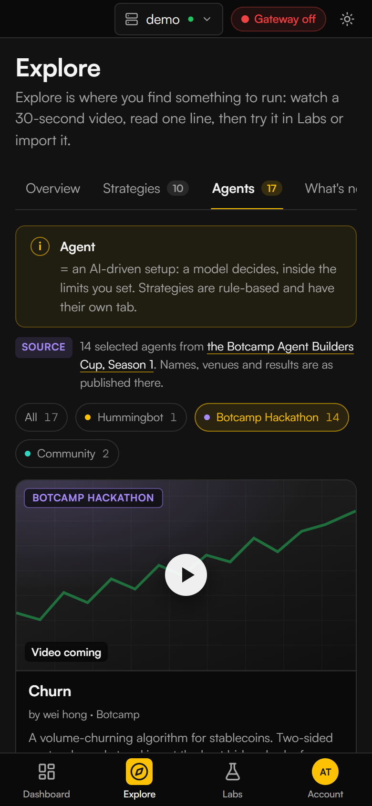

Explore: Learn, Try, Go Live
The second door in the rail stops being a place that only lists agents. It becomes Explore: a short video and one line for every strategy and every agent, then one action. Watch it, try it in Labs, and if it earns a place, run it live on the Dashboard.
Why
Today the second door opens the Agent Hub: a list of published agents with descriptions and no video. On an install that has not signed in to Botcamp it does not even show the list, only a sign-in box. A trader who is curious about what an agent does, and whether it is worth importing, cannot tell from that page.
Strategies and agents are also two different things, and they are mixed. A strategy is a rule-based setup: fixed rules decide when to quote, enter and exit. An agent is an AI-driven one: a model decides, inside limits you set. In one list, a reader cannot tell which of the two they are looking at, or which one they should start with.
People learn faster by watching than by reading. So every entry leads with a video, then one line, then one button. The path a trader actually takes is Explore, then Try in Labs, then live on the Dashboard, and each step should be one screen with one job. That is why the page is split into tabs: Overview, Strategies, Agents, What's new, one block on screen at a time, with the tab kept in the address so a reload or a shared link opens where it left off.
Before

After
Four tabs under the title. Each tab is a list with one job, and the two lists open with their own one-line definition, so nobody has to guess which is which.
Strategy — a rule-based setup: fixed rules decide when to quote, enter and exit.
Agent — an AI-driven setup: a model decides, inside the limits you set.



How the Source filter works
One row of chips above the agent list, each with a count: All · Hummingbot · Botcamp Hackathon · Community. A chip shows only the agents of that source; All brings the full list back. The 14 hackathon agents sit under Botcamp Hackathon, so they are one click away instead of a separate page, and the count says how many are behind the chip before anyone clicks it. Today the counts are 17 in total: 14 real hackathon agents, 2 sample community agents and 1 sample Hummingbot entry, because there is no published Hummingbot or community list to load yet.


Note: the images above are mocks. Everything marked sample is sample data, except the 14 hackathon agents, which are real.
Notes
- Content is dummy where it is marked sample. The 14 hackathon agents are real: names, builders, venues, race scores and descriptions come from the Botcamp Agent Builders Cup page and one page per agent. Every video is a placeholder marked "to be recorded", because the Agent Hub has no clips today. The feed sources for livestream, X and Discord are still to be decided; only the three Follow links are real.
- The layout and design are not final. They will be redesigned by Sofi.
- The rename is shown in the showcase only. This page and the showcase say Explore; the rail PRs (#3, #6, #25) and the other proposal pages still say Agents until the rename is approved. Renaming them is one round of work, not something to do piecemeal.
Functionality to build later (after the UI is approved)
- Real video hosting and an inline player on every card (the cards are thumbnails and a play button today).
- Real feeds for the What's new timeline: YouTube uploads, X posts and Discord announcements from the official channels.
- Import into Labs from a card, so "Try in Labs" loads something instead of opening a placeholder.
- Live performance cards from real data instead of the sample P&L, orders and runtime.
- Ratings and an imports count per entry, so a beginner can tell what other people actually run.
- Personalised recommendations in Start here, from what the install already runs.
Rollout
Built on the throwaway showcase branch to test the idea. No PR for the product itself, and no merge: the rename and the page reach the rail PRs only after the direction is approved.
| Piece | Status |
|---|---|
The 2nd rail item and the phone tab bar renamed to Explore (compass icon), /hub redirecting to /explore | Showcase only |
Four tabs with the tab in the address (?tab=) | Showcase only |
| The Source filter and the video-first cards | Showcase only |
| Content: 14 real hackathon agents, 10 documented strategies, 3 real channel links, the rest sample | Content pack written |
| Real video clips | Not built: no clips exist yet |
| Real feeds for livestream, X and Discord | Not built: sources to decide |
| Import into Labs from a card | Not built |
| This proposal page | In review, PR #13 |
Decision requested
Approve Explore as the name of the second door, the four tabs (Overview, Strategies, Agents, What's new), the video-first card with one action, and the Source filter that holds the 14 hackathon agents. Two things are still missing and only you can supply them: the video clips, and the real sources for the livestream, X and Discord feed.
Refinement log
Newest first. Add a row for every change that comes out of review.
| Date | Change | Reason / source | PR |
|---|---|---|---|
| 2026-11-28 | Page written. Explore renames the second door and splits into four tabs. Two mock layouts were made (top tabs, and a persistent second vertical layer) and top tabs was chosen: the second layer would take 180 to 220 px from the video cards and would need a drawer on a phone, and it only earns its place at six or more sections. Every entry is video first with one action; the Source filter carries the 14 hackathon agents. Content: 14 real agents from the Agent Builders Cup, 10 strategies verified on the Hummingbot docs, 3 real channel links, everything else sample, all videos to be recorded | User: rename the second door to Explore; keep strategies and agents as separate lists with their own definition; video first; dummy content is fine. Layout decided with the two layout mocks | #13 |